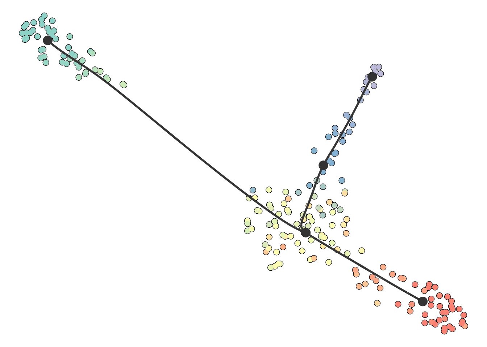
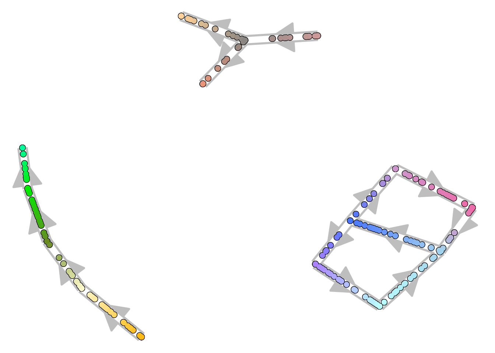
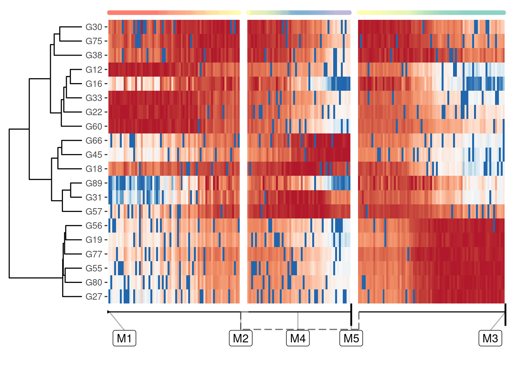

library(dyno)
library(tidyverse)The main functions for plotting a trajectory are included in the dynplot package.
We’ll use an example toy dataset
set.seed(1)
dataset <- dyntoy::generate_dataset(model = "bifurcating", num_cells = 200)To visualise a trajectory, you have to take into acount two things:
Depending on the answer on these two questions, you will need different visualisations:
The most common way to visualise a trajectory is to plot it on a dimensionality reduction of the cells. Often (but not always), a TI method will already output a dimensionality reduction itself, which was used to construct the trajectory. For example:
model <- infer_trajectory(dataset, ti_mst())
## Loading required namespace: hdf5r
head(get_dimred(model), 5)
## comp_1 comp_2
## C1 -16.665552 -2.0932842
## C2 -6.100642 -5.8776537
## C3 -13.504351 -8.2116550
## C4 -15.828066 0.9743139
## C5 7.454530 -11.1981456Dynplot will use this dimensionality reduction if available, otherwise it will calculate a dimensionality reduction under the hood:
plot_dimred(model)
## Coloring by milestone
## Using milestone_percentages from trajectoryYou can also supply it with your own dimensionality reduction. In this case, the trajectory will be projected onto this dimensionality reduction.
dimred <- dyndimred::dimred_umap(dataset$expression)
plot_dimred(model, dimred = dimred)
## Coloring by milestone
## Using milestone_percentages from trajectory
On this plot, you can color the cells according to
expression_source which is usually the original dataset, but can be in any format accepted by dynwrap::get_expression().patchwork::wrap_plots(
plot_dimred(model) + ggtitle("Cell ordering"),
plot_dimred(model, grouping = group_onto_nearest_milestones(model)) + ggtitle("Cell grouping"),
plot_dimred(model, feature_oi = "G1", expression_source = dataset) + ggtitle("Feature expression"),
plot_dimred(model, "pseudotime", pseudotime = calculate_pseudotime(model)) + ggtitle("Pseudotime")
)
## Coloring by milestone
## Using milestone_percentages from trajectory
## Coloring by grouping
## Coloring by expression
## root cell or milestone not provided, trying first outgoing milestone_id
## Using 'M1' as rootThe result is just a regular ggplot2 object, so you can change and adapt it further:
plot_dimred(model) +
ggtitle("Cells are amazing") +
annotate("label", x = model$dimred[1, 1], y = model$dimred[1, 2], label = "Amazing cells") +
annotate("label", x = model$dimred[2, 1], y = model$dimred[2, 2], label = "Also amazing cells")
## Coloring by milestone
## Using milestone_percentages from trajectoryIf the dataset is too complex to be visualised using a 2D dimensionality reduction, it can be useful to visualise the trajectory itself. We provide 3 ways to do this:
When the trajectory has a tree structure and a clear direction, it is often the most intuitive to visualise it as a dendrogram:
plot_dendro(model)
## root cell or milestone not provided, trying first outgoing milestone_id
## Using 'M1' as root
## Coloring by milestone
## Using milestone_percentages from trajectoryThis visualisation hinges on the correct location of a root, which will be further discussed in the adapting guide.
Here you can again color the cells in different ways similar as plot_dimred, i.e.:
plot_dendro(model, "pseudotime")
## root cell or milestone not provided, trying first outgoing milestone_id
## Using 'M1' as root
## Pseudotime not provided, will calculate pseudotime from root milestoneFor more complex topologies, which include cycles or disconnected pieces, the trajectory can be visualised as a 2D graph structure.
disconnected_dataset <- dyntoy::generate_trajectory(model = "disconnected", num_cells = 300)
plot_graph(disconnected_dataset)
## Coloring by milestone
## Using milestone_percentages from trajectory
Sometimes it can be useful to visualise the trajectory in one dimension, so that you can use the other dimension for something else:
plot_onedim(add_root(model))
## root cell or milestone not provided, trying first outgoing milestone_id
## Using 'M1' as root
## Coloring by milestone
## Using milestone_percentages from trajectoryHeatmap plotting is currently still experimental.
A one-dimensional visualisation is especially useful if you combine it with a heatmap:
plot_heatmap(model, expression_source = dataset)
## No features of interest provided, selecting the top 20 features automatically
## Using dynfeature for selecting the top 20 features
## root cell or milestone not provided, trying first outgoing milestone_id
## Using 'M1' as root
## Coloring by milestone
Selecting relevant features for this heatmap is discussed in a later guide, but suffice it to say that plot_heatmap() by default will plot those features that best explain the main differences over the whole trajectory.
Plotting of RNA velocity on top of a trajectory would be very very useful, but is not yet included. See the issue on github: https://github.com/dynverse/dynplot/issues/29